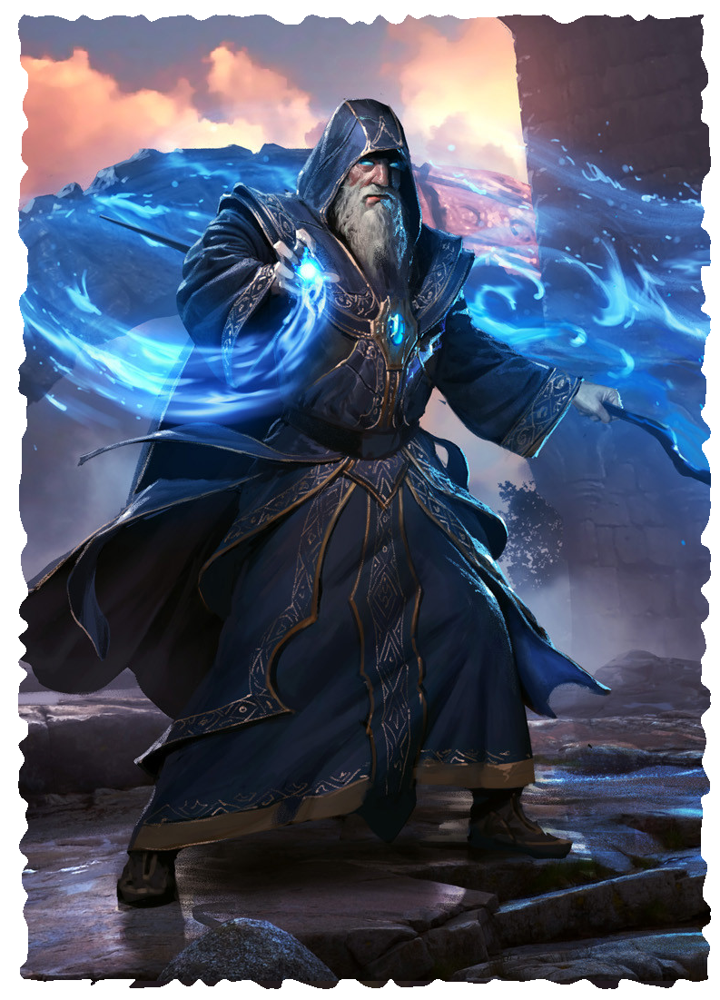

WIZARD
The most scholarly of magic-users, wizards confront magic as a science, believing the field of energy enveloping the world obeys certain laws and principles. Only by rigorous study and practice can one ever hope to attain true mastery over magic. Thus, wizards spend years poring over the writings of their predecessors, experimenting with strange spells, hunting down elusive relics, and collecting bizarre ingredients they believe can open new areas of study and produce new magical effects. Most wizards consider all strains of magic to be fair game in their research, making them some of the greatest heroes or the darkest villains the world has ever known.
Wizards record their research and discoveries in a “Grimoire,” an overly large book, its size necessary to contain all of the arcane knowledge you have acquired. It is these huge books that make their profession quite obvious to any who see them, for no wizard ever travels without one or more of these weighty tomes. As they accumulate more and more knowledge, wizards must create additional Grimoires, filling their libraries with countless volumes of incredibly valuable and powerful tomes.
LEVEL 3 WIZARD
Attributes Increase two by 1
Characteristics Health +2, Power +1
Languages and Professions Add one Academic Profession.
Magic Make two choices. For each choice, you discover a tradition or learn one spell.
Grimoire You acquire a tome filled with magical lore. The tome grants 1 boon on Intellect challenge rolls you make to recall information about magic. In addition, the tome also contains spells you have discovered during your travels.
Your Grimoire holds three spells of a rank you can cast. The spells can belong to any tradition, even a tradition you have not yet discovered. For the purpose of gaining Corruption from learning certain spells, choosing a spell to include in your Grimoire counts as learning it. Finally, if you learn a spell already in your Grimoire, you can add another spell to your Grimoire of a rank you can learn and cast.
You can create additional Grimoires to hold more spells or to replace a Grimoire you have lost. To create a Grimoire, you must spend 48 hours creating a book using exotic materials worth 5 sp. When you complete your work, you can inscribe any three spells of a rank you can cast inside the book.
Grimoire Casting If you are holding a Grimoire, you can cast a spell it contains by expending the casting of a spell you have learned of the same or higher rank.
LEVEL 6 WIZARD
Characteristics Health +2
Magic You discover a tradition or learn one spell.
Spell Expertise Increase by 1 the number of castings for all rank 0 and rank 1 spells you have learned.
LEVEL 9 MASTER WIZARD
Characteristics Health +2, Power +1
Magic You discover a tradition or learn one spell.
Spell Mastery You master the art of casting spells and can express this mastery with 6 spell points. When you cast a spell, you can spend a number of spell points equal to the spell’s rank (minimum 1 point) to cast the spell without expending a casting, or to cast a spell for which you have no castings remaining. You replenish all spell points spent when you complete a rest.